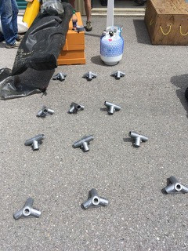
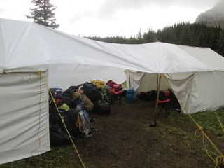
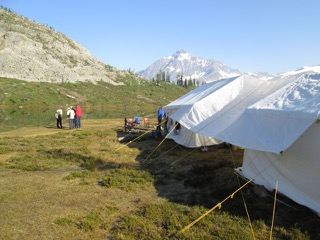

Camp Cook and Supply Tent Setup Sheet
Cook Tent
- larger than the storage tent. Has 3 “bays”, which means 4 cross rows of connectors and poles.
- Cook and Storage tents have similar looking connections, but are different. Look for “Cook” written on the connectors. They should all be in their separate bags.
- there are two different types of connectors: -the two tent ends use 3 connectors each, for a total of 6 connectors, that are all the same, and have 3 sleeves each. They are used for the wall top, and the ridge poles.
- the two inside cross rows also use 3 connectors for each row for a total of 6 connectors. They are all the same, and have 4 sleeves each. They are used for the wall top, and the ridge poles.
- Suggest laying out the connectors on the ground, roughly where they go.

- Build the roof frame using all connectors and ridge and roof poles. Install the wall poles later. Only lightly tighten the connector bolts.
- Drag the tent onto this frame.
- Lift the frame on one side and install the 4 wall poles. Lightly tighten connector bolts.
- Similarly insert the other side of wall poles. Lightly tighten……well you get the picture.
- Install guy lines to secure.
Supply Tent
- Try to align the Supply Tent with the Cook tent, with the Supply tent entrance facing the Cook tent, and about 16 (?) feet apart. The Cook Tent’s entrance will face away from the Supply Tent.


- Supply Tent has only two “bays”, so 3 cross rows of connectors and poles.
- Look for “Storage” written on the connectors.
- there are two different types of connectors: -the two tent ends use 3 connectors each, for a total of 6 connectors, that are all the same, and have 3 sleeves each. They are used for the wall top, and the ridge poles.
- - the one inside cross row uses 3 connectors, that are all the same, and have 4 sleeves each. They are used for the wall top, and the ridge poles.
- Build the roof frame using all connectors and ridge and roof poles. Install the wall poles later. Only lightly tighten the connector bolts.
- At this point, try to fine tune the alignment of the Supply tent and Cook tent so that a connecting tarp can be used between the two tents, in case of rain.
- Drag the Supply tent onto this frame.
- Lift the frame on one side and install the 3 wall poles. Lightly tighten connector bolts.
- Similarly, insert the other side of wall poles. Lightly tighten……well you get the picture.
- Check final alignment of the two tents.
- Install guy lines to secure.
- Feed a long rope inside the Supply tent far end, under the ridge poles, and through to the ridge pole on the Cook Tent. The roof rope inside the Supply tent will be used to suspend lunches if desired. The external part of the rope between the two tents, will be used to support a connecting tarp, useful on rainy days.